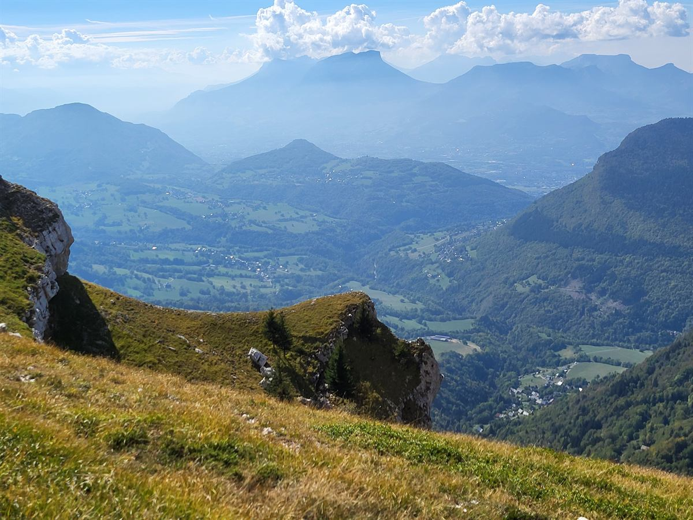
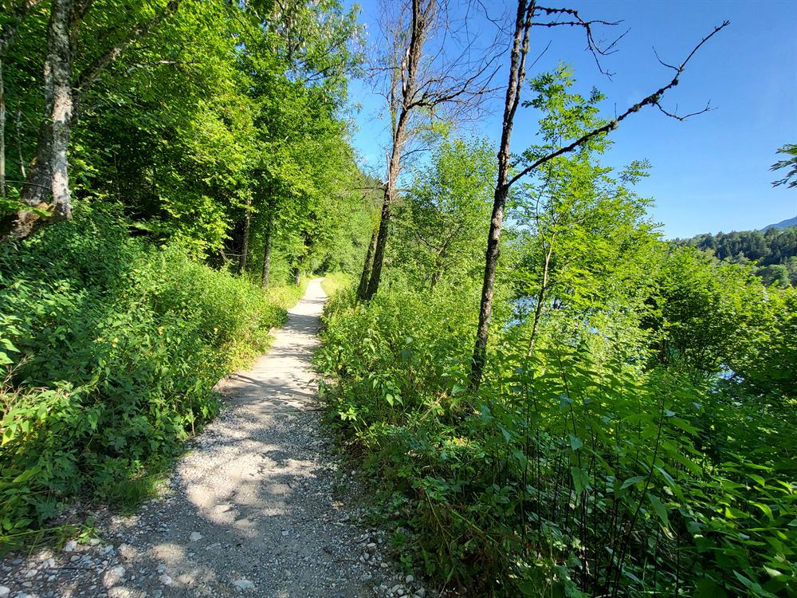

Les stages collectifs · Stage de 3 jours
Garder le cap dans un monde incertain
Ne pas attendre que le monde redevienne prévisible pour construire son avenir.
Trois jours pour anticiper les changements, renforcer vos ressources et rester acteur de votre avenir.
- Durée
- 3 jours
- Lieu
- Massif des Bauges, Savoie
- Groupe
- 4 à 6 personnes
- Format
- Marche le matin, ateliers pratiques l'après-midi
- Dates
- À venir
- Tarif
- À préciser
Et si vous vous prépariez à l'avenir sans en avoir peur ?
Intelligence artificielle, transformations économiques, crises environnementales, tensions géopolitiques, évolutions sociales... Difficile de savoir à quoi ressemblera demain. Vous vous interrogez peut-être sur l'avenir de votre métier, de votre activité ou de vos ressources.
Faut-il imaginer le pire ? Multiplier les précautions ? Attendre de voir ? Et si la meilleure préparation consistait à renforcer votre capacité à vous adapter plutôt qu'à chercher à tout prévoir ?
Se préparer, ce n'est pas céder à la peur. Il s'agit de regarder lucidement les évolutions possibles et de développer des capacités qui nous aideront à faire face, quelles que soient les circonstances. L'objectif n'est pas d'avoir réponse à tout, mais de ne pas se sentir démuni lorsque les repères changent.
Trois jours pour anticiper, se renforcer et agir
- JOUR 1 · ANTICIPERRegarder l'incertitude en facePrendre du recul sur les évolutions du monde, explorer votre rapport à l'incertitude, distinguer faits, tendances et scénarios imaginés, puis construire plusieurs scénarios plausibles.Intention : transformer une inquiétude diffuse en une compréhension plus claire des risques et des possibilités.
- JOUR 2 · SE RENFORCERDévelopper ses capacités d'adaptationComprendre vos réactions quand vos repères sont bousculés, expérimenter des pratiques corporelles, émotionnelles et mentales, et faire l'inventaire de vos ressources.Intention : renforcer vos points d'appui pour traverser les changements sans perdre votre élan.
- JOUR 3 · AGIRConstruire sa stratégie de préparationDistinguer ce qui dépend de vous, ce que vous pouvez influencer et ce qui vous échappe, apprendre à décider sans toutes les informations et bâtir votre plan de préparation.Intention : repartir avec une stratégie réaliste, des ressources mobilisables et des premiers pas.
La montagne, un terrain pour apprendre à s'adapter

En montagne, nous ne maîtrisons ni la météo ni tous les imprévus. Mais nous pouvons nous préparer, observer les signes, adapter notre itinéraire et décider de faire demi-tour lorsque c'est nécessaire.
La montagne nous apprend qu'être préparé ne signifie pas être certain de ce qui va se produire, mais disposer de ressources, de repères et de solutions pour réagir avec discernement.
Des expériences pour construire votre boîte à outils
Quelques expériences que vous pourrez vivre pendant ces trois jours.
- Ma carte des incertitudesIdentifier ce qui pourrait changer
Explorer les évolutions qui pourraient compter pour vous, en distinguant faits connus, tendances et scénarios imaginés.
- Le laboratoire des futurs possiblesExplorer plusieurs scénarios
Construire deux ou trois scénarios contrastés et découvrir que plusieurs chemins restent possibles.
- Mon baromètre intérieurRenforcer ma stabilité face à l'imprévu
Reconnaître vos réactions face à l'incertitude et vous constituer une sélection personnelle d'exercices.
- Mon capital d'adaptationIdentifier mes ressources et mes fragilités
Faire l'inventaire de vos compétences, de vos expériences, de votre réseau et de vos capacités d'apprentissage.
- Les trois cercles d'actionConcentrer mon énergie là où elle est utile
Distinguer ce que vous pouvez décider, influencer ou accepter, et choisir où reprendre l'initiative.
- Mon plan de navigationPréparer plusieurs chemins
Construire votre stratégie : actions à engager, compétences à développer, options alternatives et signaux de réévaluation.
Ces expériences sont proposées dans le respect du rythme et de la liberté de chacun. Leur déroulement peut être adapté aux besoins du groupe.
Une approche qui associe réflexion, expériences et action
Ce stage s'appuie sur le coaching, la systémique, la PNL générative et les modèles de changement, avec des repères inspirés de la théorie polyvagale et des pratiques corporelles pour explorer les réactions au stress. Selon le groupe, l'EFT ou la logosynthèse peuvent être proposées à titre expérientiel. L'objectif n'est pas de multiplier les théories, mais de tester des outils concrets et de garder ceux qui vous seront utiles.
Ce que ces trois jours peuvent vous apporter
- Une vision plus claire des changements qui pourraient affecter votre avenir.
- Une meilleure capacité à distinguer les risques plausibles des scénarios imaginés.
- Des outils pour retrouver de la stabilité lorsque l'incertitude devient pesante.
- Une meilleure connaissance de vos ressources et de vos vulnérabilités.
- Davantage de discernement pour décider et agir dans un environnement incertain.
- Une stratégie personnelle de préparation et un kit de ressources réutilisable.
Vous ne repartirez pas avec des certitudes sur l'avenir. Vous repartirez avec davantage de ressources pour l'aborder.
Ce stage est fait pour vous si...
Ce n'est ni un stage de survie ni une démarche fondée sur des prédictions catastrophistes. Il s'inscrit dans une démarche de développement personnel et professionnel et ne remplace pas un accompagnement médical ou psychologique lorsque celui-ci est nécessaire.
- Vous vous interrogez sur les conséquences des transformations du monde sur votre activité ou votre vie.
- Vous souhaitez anticiper les changements plutôt que les subir.
- Vous êtes professionnel, manager, indépendant ou entrepreneur dans un environnement en évolution.
- Vous souhaitez mieux comprendre vos réactions face à l'incertitude.
- Vous recherchez des outils concrets pour développer votre capacité d'adaptation.
- Vous aimeriez préparer plusieurs options sans renoncer à vivre pleinement le présent.
Infos pratiques
- Durée
- 3 jours
- Lieu
- Massif des Bauges, Savoie
- Groupe
- 4 à 6 participants
- Dates
- À venir
- Tarif
- À préciser
- Hébergement et repas
- Modalités à préciser
Les marches sont adaptées aux conditions météorologiques et aux capacités du groupe. Le niveau de marche requis est précisé avant l'inscription.
Le rythme des journées
- Le matin : marche en montagne, exercices d'observation, expériences et temps de réflexion.
- À midi : une pause déjeuner pour se retrouver et partager.
- L'après-midi : ateliers pratiques, exploration de scénarios, exercices de coaching et échanges.
- En fin de stage : un kit personnel de ressources et un plan de préparation.
L'avenir est incertain. Vous pouvez vous y préparer.
Vous ne pouvez pas prévoir tous les changements. Mais vous pouvez renforcer vos ressources, élargir vos possibilités et choisir dès aujourd'hui des actions qui vous aideront demain.
L'Élan des Cimes · Retrouver son élan, choisir son chemin.